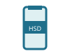

Bài 1 — Thông tin và dữ liệu
On the way to school, Minh crosses a busy junction.
Trên đường tới trường, Minh phải đi qua một ngã tư đông đúc. Minh quan sát đèn giao thông.
Minh sees a green light, and the cars on the red side have stopped.
Minh thấy đèn chuyển màu xanh, các xe chiều đèn đỏ đã dừng lại.
So Minh knows it is safe to cross — and decides quickly.
Nhờ đó Minh biết có thể qua đường an toàn và quyết định nhanh chóng qua đường.
The green light, the stopped cars · đèn xanh, các xe đã dừng
These are DATA — what Minh sees · là dữ liệu"It is safe to cross now" · "có thể qua đường an toàn"
This is INFORMATION — what Minh understands · là thông tinThe traffic light itself is the information carrier. Chiếc đèn giao thông khi đó được gọi là vật mang tin.
Everything that gives people understanding about the world around them and about themselves.
Thông tin là những gì đem lại hiểu biết cho con người về thế giới xung quanh và về chính bản thân mình.
An watches the weather forecast on TV and knows "it is sunny today".
An xem dự báo thời tiết trên tivi và biết "hôm nay trời nắng" — đó là thông tin.
Mỗi vật, âm thanh, hình ảnh dưới đây đem lại cho em hiểu biết gì?

We gain understanding by listening, watching and experiencing.
Những hiểu biết của chúng ta đều có được từ sự lắng nghe, quan sát và trải nghiệm.
Information written onto an information carrier becomes data.
Thông tin được ghi lên vật mang tin thì trở thành dữ liệu.
The weather forecast An watches mixes all four forms at once.
Bản tin dự báo thời tiết An xem có cả con số, văn bản, hình ảnh và âm thanh.
A medium used to store and carry information.
Vật mang tin là phương tiện được dùng để lưu trữ và truyền tải thông tin.
Because data brings us information, people sometimes call a carrier an "information" store too.
Vì dữ liệu đem lại thông tin nên đôi khi "dữ liệu" cũng được gọi thay bằng "thông tin".
Bạn An reads the weather bulletin · An đọc bản tin dự báo
Gets the information: "hôm nay trời nắng" · hiểu được thông tinA 5-year-old who cannot read it yet · em bé 5 tuổi chưa đọc được
Same data gives no information · dữ liệu không đem lại thông tinThe understanding information brings always depends on who receives it. Sự hiểu biết mà thông tin đem lại luôn phụ thuộc vào người tiếp nhận thông tin đó.
Mỗi dòng sau đây là thông tin hay dữ liệu?
Line 1 is just recorded numbers — data. Line 2 tells you what to do — information. Dòng 1 là các con số được ghi lại — dữ liệu. Dòng 2 đem lại hiểu biết, hành động — thông tin.
Tầm quan trọng của thông tin
Almost everything people do needs information.
Hầu hết mọi hoạt động của con người đều cần đến thông tin.
A history lesson about the Điện Biên Phủ campaign.
Bài học lịch sử về Chiến dịch Điện Biên Phủ có nhiều thông tin về địa điểm, thời gian, diễn biến trận đánh…
Leaving for study group, An hears Mum say: "It's going to rain."
Chuẩn bị sang nhà Minh học nhóm, An nghe mẹ nói: "Trời sắp mưa đấy nhé."
Thông tin đúng giúp con người đưa ra lựa chọn tốt và hành động đạt hiệu quả.
Bảng 1.1 ghi lượng mưa (mm) của Hà Nội, Huế, Đà Nẵng, Vũng Tàu theo từng tháng.
d) Yes — that answer can affect when and where to go on a trip. Câu trả lời ở c) có ảnh hưởng đến việc chọn thời gian và địa điểm du lịch.
Remember: data is the record on a carrier; information is the understanding you get; good information is accurate. Nhớ: dữ liệu là phần ghi trên vật mang tin; thông tin là hiểu biết em thu được; thông tin tốt phải đúng.